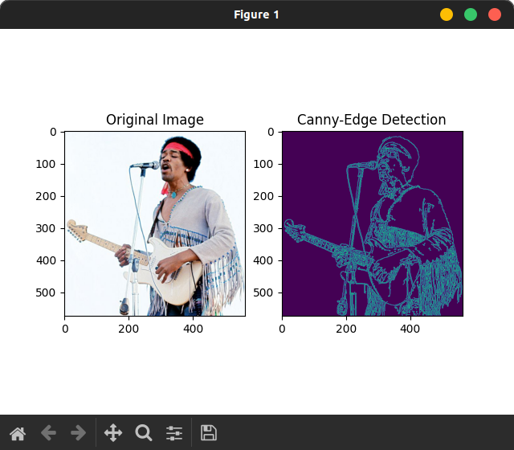
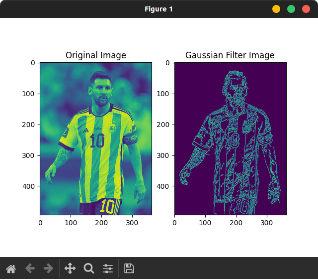

Canny Edge Detector
Jun 14, 2023
Una aplicación de Canny Edge Detection en ensamblador para x86 podría beneficiarse del calendarizador dinámico por hardware por las siguientes razones:
- Intensidad computacional: El algoritmo de Canny Edge Detection implica operaciones intensivas de procesamiento de imágenes, como convoluciones y cálculos de gradiente. Estas operaciones requieren un alto uso de recursos de cómputo y, por lo tanto, podrían beneficiarse de la capacidad del calendarizador dinámico para programar y ejecutar instrucciones de manera eficiente.
- Paralelismo a nivel de instrucción: Los algoritmos de Canny Edge Detection a menudo se pueden descomponer en instrucciones independientes y paralelas que operan en diferentes píxeles o vecindarios de la imagen. El calendarizador dinámico puede aprovechar este paralelismo a nivel de instrucción para ejecutar múltiples instrucciones en paralelo, utilizando unidades de ejecución en el procesador, lo que puede acelerar la velocidad de procesamiento.
- Acceso a memoria optimizado: El algoritmo de Canny Edge Detection implica el acceso a múltiples píxeles y cálculos basados en vecindarios de píxeles. El calendarizador dinámico puede ayudar a optimizar el acceso a memoria mediante técnicas como la especulación de carga y la anticipación de datos, reduciendo la latencia y mejorando el rendimiento general.
- Uso eficiente de recursos: El calendarizador dinámico puede realizar decisiones de calendarización en tiempo real, optimizando el uso de recursos como las unidades funcionales del procesador, las cachés y las tuberías de ejecución. Esto puede ayudar a minimizar los cuellos de botella y la ociosidad de los recursos, maximizando así la eficiencia y el rendimiento de la aplicación de Canny Edge Detection.
Tomando en cuenta lo anterior, el calendarizador dinámico por hardware puede mejorar el rendimiento de una aplicación de Canny Edge Detection en ensamblador para x86 al optimizar la ejecución de instrucciones, aprovechar el paralelismo a nivel de instrucción, optimizar el acceso a memoria y utilizar eficientemente los recursos del procesador.
Link al Proyecto

